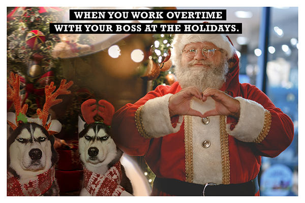

Bellow is my raster work. I planed to do a hummer composition picture with some funny pets, like cats or dogs. Finally, I chosed the husky. siche they are allaws be the super funny icon.
❄ ❄ ❄ ❄ ❄ ❄

Welcome| Raster| Vecter| TBM| Print Layout| About me|